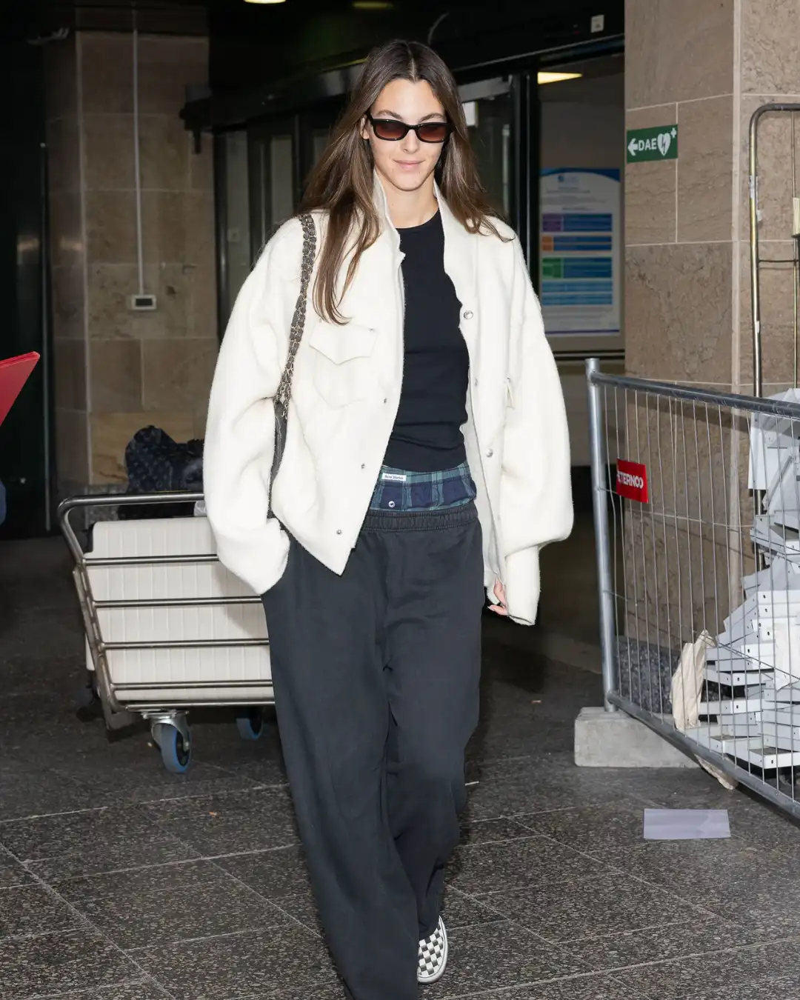
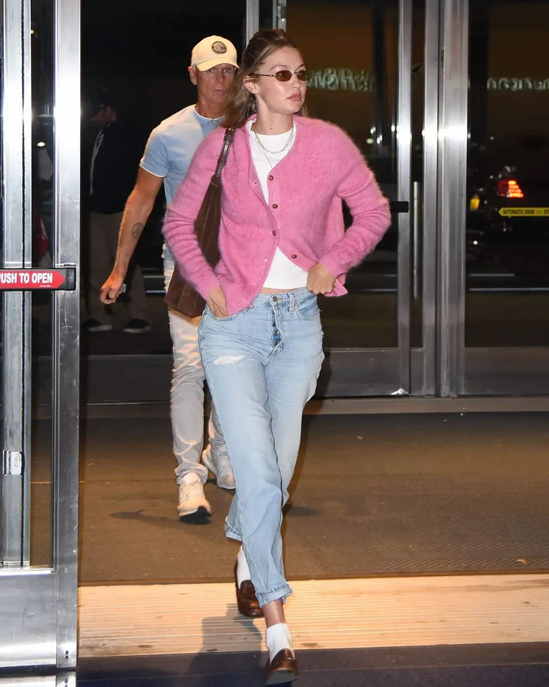
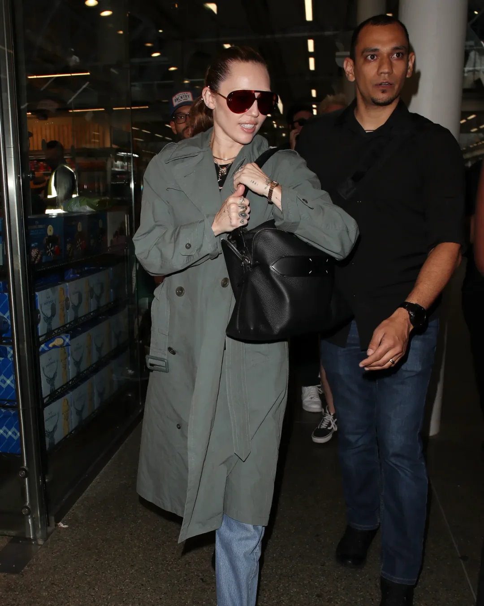
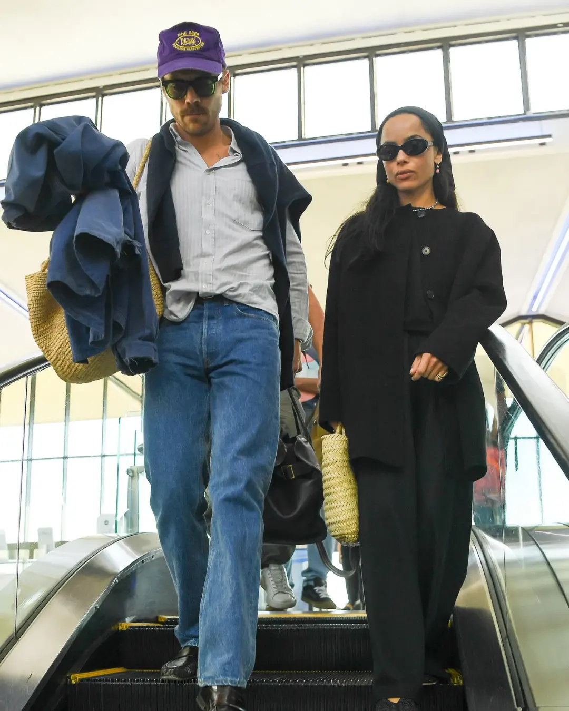
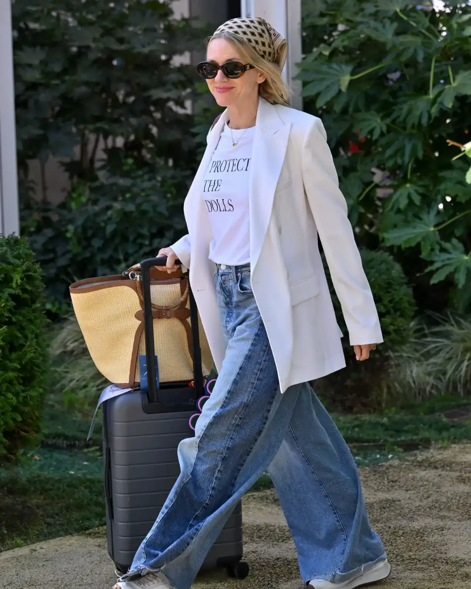

Las últimas tendencias en moda, belleza y lifestyle, inspiración de celebridades, gastronomía, deporte y los temas que marcan la conversación en Aloure.

MODA
20 de marzo de 2026
Se acerca otra temporada alta de viajes: las vacaciones están a la vuelta de la esquina y muchos ya planifican sus trips de invierno. Ya sea que estés contando los días para un viaje que llevás planeando meses o solo tengas unas mini- aventuras de fin de semana, algo es seguro: pasar por el aeropuerto formará parte de tu rutina muy pronto. No basta con empacar conjuntos bonitos para vacacionar: también es clave armar looks cómodos y con estilo para el viaje, porque el trayecto hasta tu destino puede ser tan importante como lo que hagas al llegar. ¿Quién mejor para inspirarnos que las celebridades, expertas en moverse sin perder el glamour?
La fórmula perfecta para viajar es combinar básicos cómodos y chic que te permitan pasar del avión a la ciudad sin perder estilo. Por ejemplo, las jeans de pierna ancha se han vuelto un favorito de celebridades como Miley Cyrus. Combinadas con un cardigan suave o una camisa oversize, son piezas clásicas, confortables y muy elegantes, perfectas incluso para pasar por los controles de seguridad sin lucir despeinada.
A continuación, cinco ideas de looks inspirados en celebridades para viajar con estilo:

Vittoria Ceretti demuestra que los pantalones de sweat pueden ser súper chic. Ella elige un modelo de pierna ancha que casi parece un pantalón de vestir, equilibrando el volumen con una camiseta ajustada y chaqueta deportiva crema. Los sneakers slip-on son perfectos para pasar seguridad y mantener la comodidad a bordo.

Gigi Hadid no despega sin su cashmere. Un cardigan de cashmere sobre camiseta blanca y jeans de talle alto crea un look cómodo pero sofisticado. Completa con calcetines suaves, mocasines de cuero y un bolso amplio de gamuza para un estilo effortless pero pulido.

Miley Cyrus nos recuerda que los básicos atemporales nunca fallan. Una trench coat de inversión, un pullover de cashmere negro y jeans azul son piezas que funcionan siempre. Con ballet flats negros y un tote resistente, es un look seguro y elegante tanto en el viaje como en el destino.

Zoë Kravitz combina piezas minimalistas que se pueden reutilizar una y otra vez. Un abrigo sin cuello, camiseta oversize y pantalones relajados, todos en negro, aseguran confort, mientras que flats elegantes, bolso de paja y accesorios llamativos agregan personalidad al conjunto.

El denim de pierna ancha es imprescindible para viajes urbanos. Naomi Watts lo combina con blazer, camiseta gráfica y zapatillas blancas, logrando un equilibrio entre comodidad y estilo elevado. Para un destino tropical, un bolso de rafia y un pañuelo estampado en la cabeza completan el look con toque chic. Viajar con estilo no tiene que ser complicado. Con estos cinco looks inspirados en celebridades, podés combinar comodidad y elegancia sin esfuerzo, y sentirte confiada desde el momento en que pisás el aeropuerto hasta tu destino final. Elegí tus favoritos, adaptalos a tu estilo y recordá: lo más importante es que cada viaje sea tan chic como vos.
Las últimas tendencias en moda, belleza y lifestyle, inspiración de celebridades, gastronomía, deporte y los temas que marcan la conversación en Aloure.